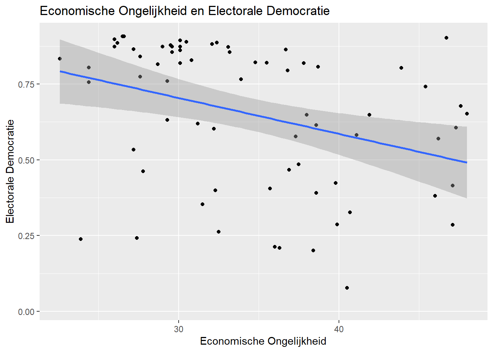
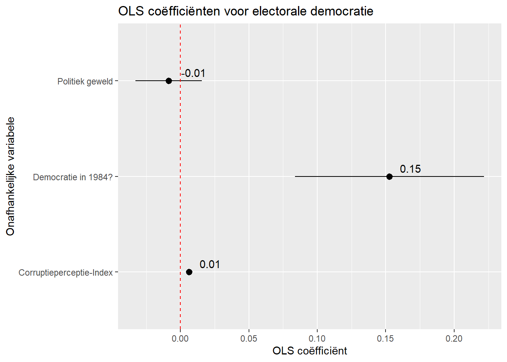
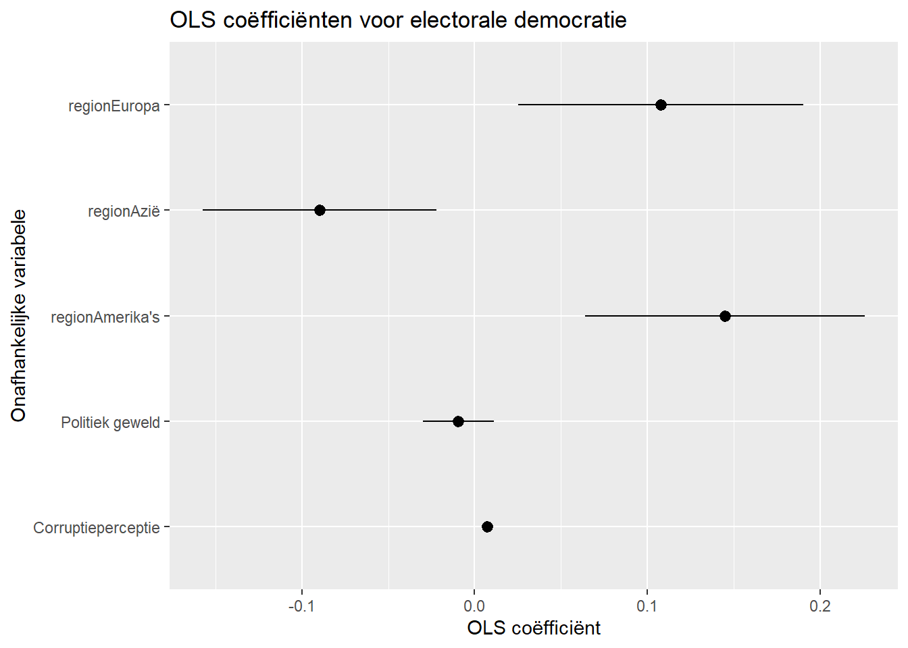
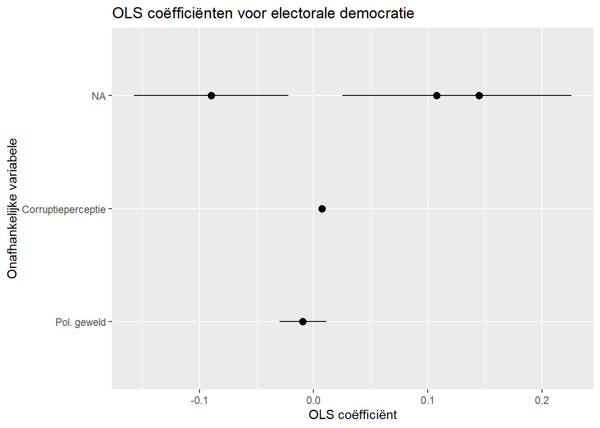
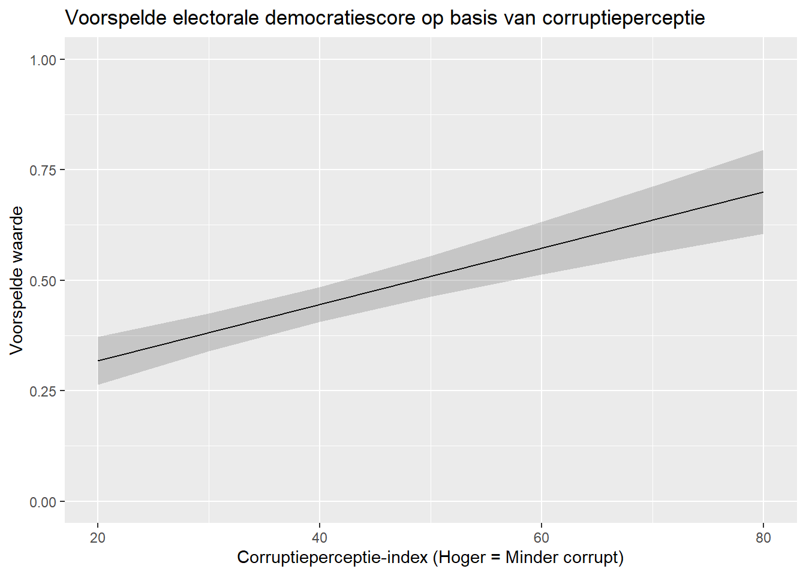
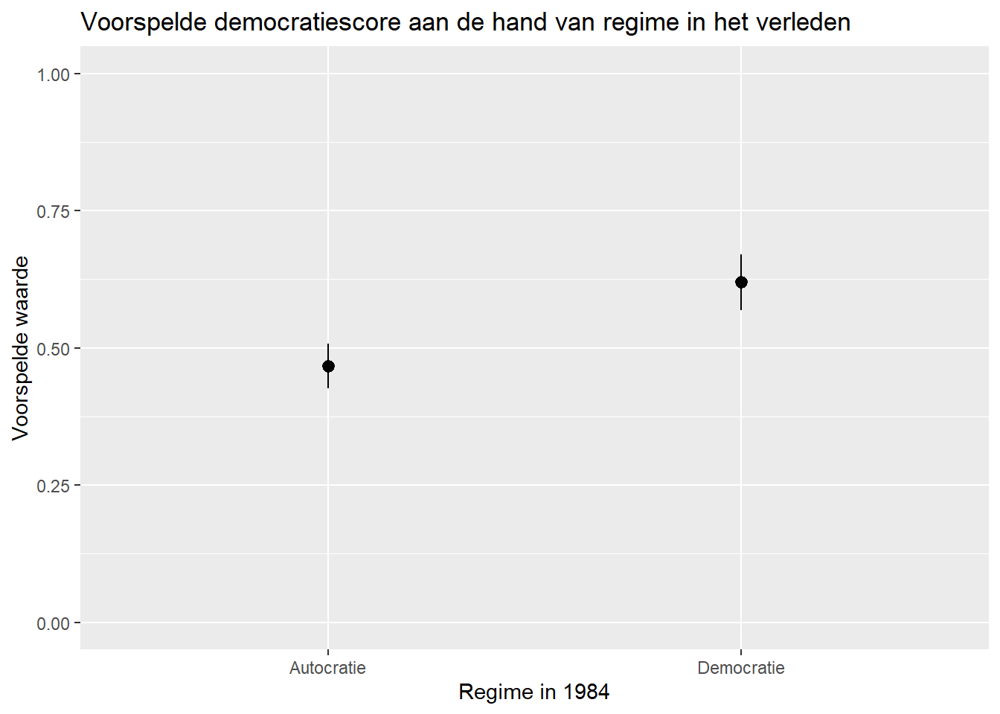
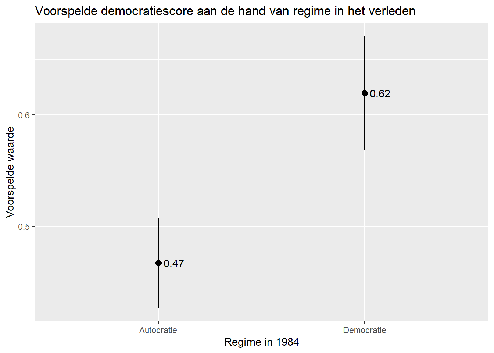

#Packages
library(rio) #laden van data
library(tidyverse) #data manipulatie en grafieken
library(broom) #samenvattingen regressiemodellen
library(marginaleffects) #voorspelde waarden berekenen
library(modelsummary) #tabellen opstellen
#Data
demdata <- import("demdata.rds")8 Rapporteren en Presenteren van Resultaten
Dit document bevat algemene richtlijnen over het correct presenteren en rapporteren van correlaties en lineaire regressiemodellen. Sommige secties hebben een “Rapportage” sub-sectie met instructies over hoe je resultaten bespreekt in rapporten. “Instructies” sub-secties geven verdere tips over hoe je resultaten best visueel presenteert.
We laden de packages en data gebruikt in dit hoofdstuk eerst:
8.1 Beschrijvende Statistieken
Vooraleer we beginnen aan het onderzoeken van verbanden tussen variabelen, is het gebruikelijk om alle variabelen op zich te onderzoeken: wat zijn de minima en maxima, het gemiddelde, en de standaardafwijking (voor continue variabelen) of de frequenties (voor binaire/categorische variabelen)? In een onderzoekspaper vind je dan ook vaak een tabel met deze descriptieve statistieken (ofwel in de tekst zelf, ofwel in Appendix). Deze tabel geeft de lezer (en de onderzoeker!) meer inzicht in de gebruikte variabelen.
8.1.1 Continue variabelen
We kunnen gemakkelijk een descriptieve tabel maken met het modelsummary package en de datasummary functie binnen dat package:
datasummary(v2x_polyarchy + gini_2019
~ Mean + SD + Min + Max + N, data = demdata)| Mean | SD | Min | Max | N | |
|---|---|---|---|---|---|
| v2x_polyarchy | 0.51 | 0.25 | 0.01 | 0.91 | 179 |
| gini_2019 | 34.36 | 6.87 | 22.60 | 48.00 | 70 |
Zo lees je de syntax:
datasummary(-
We gebruiken de
datasummaryfunctie op de variabelen tussen haakjes v2x_polyarchy + gini_2019-
Dit zijn de variabelen die we willen opnemen in de tabel. Meerdere variabelen kunnen toegevoegd worden met behulp van een
+teken. Voor een tabel met alle variabelen uit de dataset kun jeAll(naam dataset)gebruiken. Dit doe je doorgaans enkel als de dataset niet veel variabelen bevat. ~ Mean + SD + Min + Max + N,-
We geven hier na de tilde
~weer welke statistieken we precies willen. De statistieken gevraagd hier zijn het meest gebruikelijk. data = demdata-
We geven hier aan uit welk dataobject de variabelen afkomstig zijn.
De tabel geeft reeds alle nodige informatie aan de lezer. Zo kan je uit de N afleiden dat een bivariate analyse van deze twee variabelen gebruik zal maken van veel minder cases dan beschikbaar in v2x_polyarchyomdat er best was ontbrekende waarden zijn bij gini_2019.
8.1.2 Binaire en categorische variabelen
We kunnen ook binaire en categorische variabelen toevoegen aan een tabel, maar hier geef je doorgaans andere statistieken: de N en het percentage observaties in de dataset. We nemen de voorbeelden TYPEDEMO1984 en Typeregime2006.
# transformeren naar factor
demdata <- demdata |>
mutate(TYPEDEMO1984_factor = factorize(TYPEDEMO1984))
demdata <- demdata |>
mutate(Typeregime2006_factor = factorize(Typeregime2006))
#tabel met percentage en N
datasummary(TYPEDEMO1984_factor + Typeregime2006_factor
~ N + Percent(), data = demdata)| N | Percent | ||
|---|---|---|---|
| Type of democracy, 1984 | Autocracies | 86 | 48.04 |
| Democracies | 57 | 31.84 | |
| Type of regime 2006 (3 cat) | Liberal democracy | 71 | 39.66 |
| Electoral democracy | 53 | 29.61 | |
| Autocracy | 41 | 22.91 |
~ N + Percent(),-
We geven hier na de tilde
~weer welke statistieken we precies willen. In het geval van factorvariabelen zijn deze gebruikelijk. Let erop dat het percentage dat wordt gegeven ookNAwaarden gebruikt in de berekening. Hieronder tonen we hoe je dit kan aanpassen.
De verschillende syntax suggereert dat we voor continue en binaire/categorische variabelen best aparte tabellen maken. Toch is dit niet nodig. In een analyse transformeert R achter de schermen een factorvariabele in meerdere dummy-variabelen. Deze 0-1 variabelen kunnen we opnemen samen met continue variabelen in een tabel. Het gemiddelde geeft dan de proportie weer van observaties in deze categorie, terwijl de N het aantal valide cases voor de variabele als geheel weergeeft.
We kunnen de dummy variabelen zelf aanmaken via mutate maar het kan sneller met het fastdummies package.
#laad het package (meestal aan het begin van je script)
library(fastDummies)
#dummy variabelen aanmaken voor alle categorieën van de variabelen
demdata <- dummy_cols(demdata,
select_columns =
c("TYPEDEMO1984", "Typeregime2006"))dummy_cols(demdata-
we passen de functie
dummy_colstoe en duiden eerst de dataset aan die van toepassing is. select_columns = c("TYPEDEMO1984", "Typeregime2006"))-
Nu creëeren we dummy-variabelen voor alle categorieën (inclusief NA) van de aangeduide categorische variabelen van de dataset.1 De nieuwe dummy-variabelen worden toegevoegd aan de dataset met de
demdata <-syntax. De naam wordt automatisch gegenereerd: de naam van de variabele met daaraan gelinkt de numerieke code (of tekst-code indien de variabele niet numeriek is). De niet-gefactorde versie vanTYPEDEMO1984in dit voorbeeld neemt 2 mogelijke waarden aan: 1 = democratie and 2 = autocratie.2 De functie creëert de volgende dummies:TYPEDEMO1984_1(observaties met de waarde ‘1’ scoorden ‘1’ op de originele variabele; observaties met score ‘0’ scoorden ‘2’ op de originele variabele) enTYPEDEMO1984_2(observaties met de waarde ‘1’ scoorden ‘2’ op de originele variabele; observaties met score ‘0’ scoorden ‘1’ op de originele variabele). We kunnen dit beter zien in de kruistabel hieronder.
# Crosstab of original variable and dummies via dummy_cols()
table(demdata$TYPEDEMO1984, demdata$TYPEDEMO1984_1)
0 1
1 0 86
2 57 0table(demdata$TYPEDEMO1984, demdata$TYPEDEMO1984_2)
0 1
1 86 0
2 0 57We kunnen de dummyvariabelen toevoegen aan de datasummary functie samen met de continue variabelen.
# tabel maken voor dummies alsof het continue variabelen zijn
datasummary(v2x_polyarchy + gini_2019+
TYPEDEMO1984_1 + TYPEDEMO1984_2 +
Typeregime2006_1 +
Typeregime2006_2 +
Typeregime2006_3
~ Mean + SD + Min + Max + N, data = demdata)| Mean | SD | Min | Max | N | |
|---|---|---|---|---|---|
| v2x_polyarchy | 0.51 | 0.25 | 0.01 | 0.91 | 179 |
| gini_2019 | 34.36 | 6.87 | 22.60 | 48.00 | 70 |
| TYPEDEMO1984_1 | 0.60 | 0.49 | 0.00 | 1.00 | 143 |
| TYPEDEMO1984_2 | 0.40 | 0.49 | 0.00 | 1.00 | 143 |
| Typeregime2006_1 | 0.43 | 0.50 | 0.00 | 1.00 | 165 |
| Typeregime2006_2 | 0.32 | 0.47 | 0.00 | 1.00 | 165 |
| Typeregime2006_3 | 0.25 | 0.43 | 0.00 | 1.00 | 165 |
De gemiddelden voor de dummy-variabelen geven de proportie van observaties met de score ‘1’ weer. De berekening negeert ontbrekende ‘NA’ waarden in tegenstelling tot de methode hierboven zonder dummies. De waarden zijn dus correcter. In deze tabel hebben we all dummies opgenomen. In de praktijk laten we bij binaire variabelen vaak de referentiecategorie weg (bv., enkelTYPEDEMO1984_2 in de tabel).
8.1.3 Presentatie: Descriptieve tabellen
Voorgaande tabellen gebruiken nog de naam van de variabelen in de dataset. Deze zijn vaak niet intuïtief voor een lezer. We zullen de namen dan ook veranderen vooraleer we een tabel presenteren. Dit doen we met behulp van de rename functie.
# we maken een nieuwe, kleinere dataset met hernoemde variabelen
table_data <- demdata |>
select(v2x_polyarchy, gini_2019,
TYPEDEMO1984_1, TYPEDEMO1984_2,
Typeregime2006_1, Typeregime2006_2, Typeregime2006_3) |>
rename("Polyarchiescore (2020)" = v2x_polyarchy,
"Economische ongelijkheid (2019)" = gini_2019,
"Autocratie (1984)" = TYPEDEMO1984_1,
"Democratie (1984)" = TYPEDEMO1984_2,
"Liberale democratie (2006)" = Typeregime2006_1,
"Electorale democratie (2006)" = Typeregime2006_2,
"Autocratie (2006)" = Typeregime2006_3)
#we vragen een datatabel voor alle variabelen in de nieuwe dataset
datasummary(All(table_data)
~ Mean + SD + Min + Max + N, data = table_data)| Mean | SD | Min | Max | N | |
|---|---|---|---|---|---|
| Polyarchiescore (2020) | 0.51 | 0.25 | 0.01 | 0.91 | 179 |
| Economische ongelijkheid (2019) | 34.36 | 6.87 | 22.60 | 48.00 | 70 |
| Autocratie (1984) | 0.60 | 0.49 | 0.00 | 1.00 | 143 |
| Democratie (1984) | 0.40 | 0.49 | 0.00 | 1.00 | 143 |
| Liberale democratie (2006) | 0.43 | 0.50 | 0.00 | 1.00 | 165 |
| Electorale democratie (2006) | 0.32 | 0.47 | 0.00 | 1.00 | 165 |
| Autocratie (2006) | 0.25 | 0.43 | 0.00 | 1.00 | 165 |
De modelsummary website geeft nog andere manieren weer om variabelen te hernamen binnen de functie zelf; zie deze link.
8.1.4 Opslaan als Word document
Deze tabel kunnen we naar Word exporteren met onderstaande syntax. Voor een tabel in een Nederlandse paper, verander je het woord ‘mean’ naar ‘gemiddelde’ in Word.
datasummary(All(table_data)
~ Mean + SD + Min + Max + N, data = table_data,
output = "descr_tabel.docx")output = 'descr_tabel.docx'-
Hier vragen we om een Word document (.docx) genaamd “descr_tabel” op te slaan. Dit bestand vind je terug in je R project folder. Je kan ook een subfolder aanduiden, bv. “Output folder/descr_tabel.docx”. Let erop dat je het Word document niet geopend hebt als je de syntax opnieuw wil gebruiken met aanpassingen, anders kun je een foutmelding krijgen.
8.2 Puntenwolken of Scatterplots
We kunnen een visuele weergave tonen van de bivariate relatie tussen twee continue variabelen in een puntenwolk of scatterplot. Hieronder is een voorbeeld voor de variabelen gini_2019 en v2x_polyarchy:
ggplot(demdata, aes(x = gini_2019, y = v2x_polyarchy)) +
geom_point() +
geom_smooth(method = "lm") +
labs(x = "Economische Ongelijkheid",
y = "Electorale Democratie",
title = "Economische Ongelijkheid en Electorale Democratie")
8.2.1 Rapportage
De volgende zaken kun je best benoemen wanneer je een scatterplot bespreekt:
- De richting van de relatie, alsook de sterkte (maar let op dat je best ook de correlatiecoëfficiënt bekijkt gezien visuele weergaven ook misleidend kunnen zijn).
- Patronen of trends in het plot.
- Cases die extreme waarden hebben of cases die als outliers kunnen beschreven worden.
8.2.2 Instructies
Zorg ervoor de je informatieve labels hebt voor de x -en y-as en een duidelijke titel.
Je kan de regressielijn toevoegen aan het plot om de interpretatie te verduidelijken. Dit kan je doen met de syntax
method = "lm". Je kunt de syntax veranderen naarmethod = "loess"om een ‘locally estimated scatterplot smoothing’ line te plotten. Dit is handig voor het spotten van niet-lineaire patronen in de data. Zie Paragraaf 7.3.2Let op de tekstgrootte op de assen en zorg dat de tekst goed leesbaar is. De grootte van het lettertype kun je aanpassen met de syntax om het visuele thema van de figuur te veranderen, bv. door het volgende toe te voegen:
+ theme_grey(14)of+ theme_bw(18). Het nummer tussen haakjes bepaalt de grootte van het lettertype.Je kunt een lijst met de ingebouwde visuele ggplot schema’s hier vinden. Bijkomende opties zijn beschikbaar in het ggthemes package. Meer complexe veranderingen, zoals verschillende tekstgroottes voor titel en astitels, kun je uitvoeren viatheme(), maar dit behandelen we niet in dit document.Bovenstaand plot toont de bivariate relatie tussen twee continue variabelen met toevoeging van de regressielijn. We kunnen ook de formule van de lijn toevoegen met
geom_text(). Dit doen we door een+toe te voegen nalabs()en de volgende regel toe te voegen:geom_text(x = 40, y=0.1, label="Dem Score = 1.06 + (-0.012 * Inequality)"). De formule vind je metlm(zie onder). Dex=eny=gedeelten geven de waarden (coördinaten) weer waar het label in het plot moet komen. Het kan nodig zijn de waarden stelselmatig aan te passen om een mooie weergave te bereiken. Bepaalde packages in R kunnen dit proces vergemakkelijken, zoals deze functie uit hetggpubrpackage. Dit package behoort niet tot de leerstof.
8.3 Correlaties
Voor dit voorbeeld berekenen we de Pearson correlatie tussen economische ongelijkheid (hogere waarden = meer ongelijk; gini_2019) en electorale democratie (hogere waarden = meer democratie; v2x_polyarchy).
cor1 <- cor.test(x = demdata$gini_2019,
y = demdata$v2x_polyarchy,
method = 'pearson')
cor1
Pearson's product-moment correlation
data: demdata$gini_2019 and demdata$v2x_polyarchy
t = -3.0433, df = 68, p-value = 0.003325
alternative hypothesis: true correlation is not equal to 0
95 percent confidence interval:
-0.5374741 -0.1211040
sample estimates:
cor
-0.3462257 Zie Paragraaf 1.4 voor richtlijnen over de interpretatie van correlatiecoëfficiënten.
8.3.1 Rapportage
De volgende zaken neem je best op in je rapportage:
- De specifieke correlatie je gebruikt hebt (bv. Pearson).
- Een bespreking van de richting van de relatie (positief, negatief, geen relatie), waarbij ook aandacht is voor de codering van gebruikte variabelen.
- Een bespreking van de statistische significantie:
- Significantie hebben we meestal op de niveaus van 95% (p < 0.05), 99% (p < 0.01), en 99.9% (p < 0.001) 3
- Raporteer op basis van het hoogste signficantieniveau dat de p-waarde aangeeft:
- Als p = 0.04, dan p < 0.05 (significant op 95% niveau)
- Als p = 0.02, dan p < 0.01 (significant op 99% niveau)
- Als p = 0.0000005, dan p < 0.001 (significant op 99.9% niveau)
- We rapporteren meestal niet hoger dan 99.9% of p < 0.001 (bv., we zeggen niet p < 0.000001, maar p < 0.001). We schrijven ook nooit p < 0.000.
- Een bespreking van de sterkte van de relatie. (zie Paragraaf 1.4)
Voorbeeld rapportage
Hogere waarden voor economische ongelijkheid hangen samen met lagere waarden voor electorale democratie (\(r\) = -0.35). De associatie heeft een gemiddelde sterkte en is statistisch significant (p \(<\) 0.01).
8.3.2 Presentatie: Correlatietabellen
Wanneer we slechts de correlatie tussen twee variabelen beschrijven, kunnen we deze discussie gewoon in onze tekst opnemen zoals hierboven. Wanneer we echter analyses doen met meerdere continue variabelen is het een goede praktijk om een correlatietabel op te stellen die de correlatie tussen deze variabelen weergeeft. Deze tabel kan in de hoofdtekst van een paper of in een appendix worden opgenomen. De tabel kan aangemaakt worden met de datasummary_correlation() functie uit het modelsummary package. Hier is een voorbeeld met 4 variabelen:
demdata |>
select(v2x_polyarchy, gini_2019, cpi, gdp_ppp) |>
rename("Electorale democratie" = v2x_polyarchy,
"Economische ongelijkheid" = gini_2019,
"Corruptie" = cpi,
"BBP" = gdp_ppp) |>
datasummary_correlation(method = "pearson",
title = "Relatie continue variabelen")| Electorale democratie | Economische ongelijkheid | Corruptie | GDP per capita, PPP (constant 2017 international $) | |
|---|---|---|---|---|
| Electorale democratie | 1 | . | . | . |
| Economische ongelijkheid | -.35 | 1 | . | . |
| Corruptie | .66 | -.53 | 1 | . |
| GDP per capita, PPP (constant 2017 international $) | .40 | -.52 | .79 | 1 |
Output uitleg
Elke cel bevate een correlatiecoëfficiënt voor 2 gepaarde variabelen. De correlatie tussen corruptie en economische ongelijkheid is bijvoorbeeld -0,53, terwijl de correlatie tussen GDP en corruptie 0,79 is.
Opmerking: De titel wordt in dit document onderaan de tabel weergegeven, maar wordt bovenaan afgedrukt bij het opslaan in een Word-document (zie hieronder), wat de meer conventionele plaatsing is.
Zo lees je de syntax:
demdata |> select(…)-
Hier selected we de dataset (
demdata) en de variabelen waartussen we de correlaties willen berekenen. Zonderselect(…)berekent R de correlaties tussen alle variabelen in de dataset! rename(…)-
We geven de variabelen een andere naam zodat presentatie van de variabelen in de tabel duidelijker is voor lezers.
datasummary_correlation(method = "pearson", title = "...")-
Hier duiden we aan welke correlatie we precies willen en geven we een duidelijke titel (Pearson correlation: method = “pearson”; Spearman: method = “spearman”).
We kunnen deze tabel naar een Microsoft Word bestand exporteren zodat we de tabel kunnen gebruiken in eigen papers met volgende syntax toevoeging (Je ziet de tabel nu wel niet langer in R verschijnen):
demdata |>
select(v2x_polyarchy, gini_2019, cpi, gdp_ppp) |>
rename("Electorale democratie" = v2x_polyarchy,
"Economische ongelijkheid" = gini_2019,
"Corruptie" = cpi,
"BBP" = gdp_ppp) |>
datasummary_correlation(method = "pearson",
title = "Relatie continue variabelen",
output = "correlatietabel.docx")output = "correlatietabel.docx"-
Hier vragen we de output te exporteren naar een Word (.docx) bestand. De naam van het bestand bepaal je zelf. Het bestand is terug te vinden in je projectfolder of de folder waar je syntax bestand (script of Markdown) zich in bevindt. In Word kunnnen nog verdere aanpassingen worden gedaan. 4
Waarschuwing!
Je kunt problemen tegenkomen met deze syntax indien je je Word-bestand met tabel open hebt in Word en de syntax nogmaals runt, bijvoorbeeld om een foutje te corrigeren. We raden aan het Word bestand altijd te sluiten voor je de syntax opnieuw runt.
8.3.2.1 Instructies
- Doorgaans plaatsen we de afhankelijke variabele op de eerste rij in een correlatietabel. Dit doe je door de variabele als eerste te noemen in de
select()regel van de syntax hierboven. - De variabelen hernoem je zodat het duidelijk is voor de lezer wat ze inhouden. Gebruik dus niet gewoon de naam van de variabelen zoals ze opgeslagen zijn in de dataset.
- Geef de tabel een informatieve titel.
- Het is gebruikelijk om asterisks te plaatsen in de tabel om statistische significantie weer te geven (*** = p < 0.01, ** = p < 0.01, * = p < 0.05). Jammergenoeg kan
datasummary_correlation()dit niet automatisch toevoegen. Wel kun je deze symbolen manueel (op basis vancor.test) toevoegen aan een tabel in een .docx (Word) bestand. - Correlatie (en regressie) tabellen gemaakt met
modelsummarykun je verder aanpassen met instructies op deze webpagina. Dit is echter niet nodig voor dit vak.
8.4 OLS Regressiemodellen
Lineaire regressie, oftewel OLS (Ordinary Least Squares) regressie modelleert veranderingen in het gemiddelde van een afhankelijke variabele als lineaire functie van een of meerdere onafhankelijke variabelen. We gebruiken hier de demdata dataset en voorspellen electorale democratiescores in het jaar 2020 als functie van economische ongelijkheid (gini_2019), de status van het regime van een land in 1984 (TYPEDEMO1984) en regio van de wereld waarin een land is gesitueerd (1 = Europa, 2 = Afrika, 3 = Azië, 4 = Amerikas).
Hieronder vind je de syntax en output in R. Deze output neem je niet rechtstreeks op in een paper. In de plaats daarvan maak je een formele tabel of een coëfficiëntenplot (zie onder).
#Factor maken categorische variabelen
demdata <- demdata |>
mutate(TYPEDEMO1984 = factorize(TYPEDEMO1984),
region = factor(region,
levels=c(2,3,1,4), #Ref. groep eerst inde rij
labels=c("Afrika", "Azië", "Europa", "Amerika's")))
#model schatten en opslaan
example_model <- lm(v2x_polyarchy ~ gini_2019 + TYPEDEMO1984 + region,
data=demdata)
#Resultaten
summary(example_model)
Call:
lm(formula = v2x_polyarchy ~ gini_2019 + TYPEDEMO1984 + region,
data = demdata)
Residuals:
Min 1Q Median 3Q Max
-0.52522 -0.06736 0.03585 0.09521 0.37555
Coefficients:
Estimate Std. Error t value Pr(>|t|)
(Intercept) 0.899777 0.271068 3.319 0.00175 **
gini_2019 -0.013400 0.005693 -2.354 0.02282 *
TYPEDEMO1984Democracies 0.067402 0.061709 1.092 0.28028
regionAzië 0.040365 0.149003 0.271 0.78765
regionEuropa 0.244037 0.157307 1.551 0.12753
regionAmerika's 0.253473 0.150635 1.683 0.09907 .
---
Signif. codes: 0 '***' 0.001 '**' 0.01 '*' 0.05 '.' 0.1 ' ' 1
Residual standard error: 0.1893 on 47 degrees of freedom
(126 observations deleted due to missingness)
Multiple R-squared: 0.4378, Adjusted R-squared: 0.378
F-statistic: 7.32 on 5 and 47 DF, p-value: 3.842e-05Voor interpretatierichtlijnen, zie Paragraaf 4.1.
8.4.1 Rapportage
Je rapport bevat best de volgende zaken:
- Een bespreking van de richting van de relatie (positief/negatief) en een inhoudelijke interpretatie van wat dit concreet betekent op basis van hoe de variabelen gemeten zijn en welke schaal zij hebben.
- Bij een multiple regressie is het belangrijk te verduidelijken dat het effect dat je vindt voor een onafhankelijke variabele gecontroleerd is op de andere onafhankelijke variabelen in het model. Deze worden ‘constant gehouden’ (oftewel ‘ceteris paribus’).
- Een bespreking van de statistische significantie (verwerpen of niet nulhypothese?) met vermelding van p-waarde en/of het betrouwbaarheidsinterval.
- Coëfficiënten met p-waarden groter dan 0.05 worden meestal niet als statistisch significant of als statistisch significant bij conventionele niveaus beschouwd.5 Rapporteer op basis van het hoogste signficantieniveau dat de p-waarde aangeeft:
- Als p = 0.04, dan p < 0.05 (significant op 95% niveau)
- Als p = 0.02, dan p < 0.01 (significant op 99% niveau)
- Als p = 0.0000005, dan p < 0.001 (significant op 99.9% niveau)
- We rapporteren meestal niet hoger dan 99.9% of p < 0.001 (bv., we zeggen niet p < 0.000001, maar p < 0.001). We schrijven ook nooit p < 0.000.
- Het betrouwbaarheidsinterval kan ook gebruikt worden om statistische significantie te bespreken en de onzekerheid rond de geschatte coëfficiënten aan te duiden. Als je het betrouwbaarheidsinterval bespreekt, kun je dit tussen haakjes toevoegen na de coëfficiënt, bv. “De coëfficiënt voor economische ongelijkheid is 0.8 (95% CI: 0.5, 1.1)”.
- Het is minder gebruikelijk de t-statistiek concreet te benoemen, maar het is ook geen probleem als je dit doet. Indien de t-waarde wordt opgenomen, zet je deze bij de p-waarde: “(t = 1.98, p < 0.05)”.
- Coëfficiënten met p-waarden groter dan 0.05 worden meestal niet als statistisch significant of als statistisch significant bij conventionele niveaus beschouwd.5 Rapporteer op basis van het hoogste signficantieniveau dat de p-waarde aangeeft:
Hier vind je uitgewerkte voorbeelden voor gini_2019 (een continue variabele) en TYPEDEMO1984 (een binaire variabele).
Report
gini_2019: We verwachten dat het niveau van electorale democratie lager is als economische ongelijkheid stijgt, gecontroleerd op de effecten van regimestatus in het verleden en regio in de wereld. Gebaseerd op het model verwachten we dat electoral democratie met -0.01 eenheden daalt als economische ongelijkheid met 1 eenheid stijgt. Dit effect is statistisch signifcant (p < 0.05).
TYPEDEMO1984: Het regressiemodel toont dat landen die als democratie werden beschouwd in 1984 ook vandaag democratischer zijn. Gemiddeld genomen scoren deze landen 0.07 eenheden hoger op electorale democratie in 2020 dan landen die in 1984 geen democratie waren, gecontroleerd op ongelijkheid en regio in de wereld. Het verschil is echter niet statistisch significant (p > 0.05).
Bijkomende tips:
- In een bespreking van een onderzoek kun je behalve een discussie van de coëfficiënten ook een bespreking van voorspelde waarden opnemen (bv. welk niveau van democratie verwacht je bij hoge en lage ongelijkheid volgens je model). Een plot van voorspelde waarden kan de bespreking verder verduidelijken. Zie Paragraaf 8.7 voor meer informatie.
- Als je onderzoek vooral gericht is op de relatie tussen een specifieke onafhankelijke variabele en de afhankelijke variabele dan is een discussie van de coëfficiënten van de controlevariabelen doorgaans niet nodig.
- Het intercept wordt zelden vermeld in onderzoekspapers. In een bivariaat model waarbij de predictor binair is, is het intercept wel inhoudelijk interessant, want dan staat de 0 voor de gemiddelde score op de afhankelijke variabele voor de referentiecategorie. In een experiment zou je bijvoorbeeld scores vergelijken van de controlegroep (X=0) en de experimentele groep (x=1).
- Wees voorzichting in je bespreking van de relatie tussen de variabelen. Causaliteit is moeilijk te bepalen en is onderhevig aan sterke voorwaarden. Je schrijft bijgevolg dus meestal niet het “effect van X op Y” , maar “deze verandering in X is geassocieerd met deze verandering in Y”.
8.5 Lineaire Regressietabellen
Een gebruikelijke methode om de resultaten van regressiemodellen te presenteren is met behulp van een tabel. Via het modelsummarypackage (en functie met dezelfde naam) kunnen we R gebruiken om zo’n tabel aan te maken.
8.5.1 Regressietabel voor 1 model
Als voorbeeld maken we hier een regressietabel voor een model waarin de score voor electorale democratie voorspeld wordt aan de hand van 1 onafhankelijke variabele: de corruptieperceptie-index (cpi). Hieronder vinden we de standaard output zonder toevoegingen:
#Schatten en opslaan van het model
model1 <- lm(v2x_polyarchy ~ cpi, data = demdata)
#basisfunctie voor regressietabel
modelsummary(model1)| (1) | |
|---|---|
| (Intercept) | 0.140 |
| (0.036) | |
| cpi | 0.009 |
| (0.001) | |
| Num.Obs. | 174 |
| R2 | 0.438 |
| R2 Adj. | 0.435 |
| AIC | -78.1 |
| BIC | -68.6 |
| Log.Lik. | 42.061 |
| F | 134.123 |
| RMSE | 0.19 |
modelsummary(-
Naamn van de functie
model1,-
naam van het model waarvan we de resultaten in een tabel willen presenteren.
Deze tabel kan verbeterd worden. Ten eerste kunnen we de statistische significantie van de coëfficiënten aanduiden met een asterisk (*) of andere symbolen. Ten tweede kunnen we onze variabelen duidelijkere labels geven. Ten derde kunnen we model fit statistieken die minder interessant zijn weglaten uit de tabel. Ten slotte kunnen we een titel en onderschrift toevoegen.
Dit doen we met volgende syntax:
modelsummary(model1,
stars = TRUE,
coef_rename = c(
"(Intercept)" = "Constante",
"cpi" = "Corruptieperceptie-index"),
gof_map = c("nobs", "r.squared", "adj.r.squared"),
title = "Electorale Democratie voorspeld door corruptie",
notes = "Lineaire regressiecoëfficiënten met standaardfouten tussen haakjes")- 1
- Voegt “stars” of asterisks toe voor statistische significantie.
- 2
-
We hernoemen de variabeln voor de duidelijkheid
coef_rename() - 3
-
We selecteren de fit statistieken die we willen rapporteren
gof_map() - 4
-
We geven een titel aan de table
title = - 5
-
En ten slotte geven we informatie aan de lezer over wat we precies weergeven
notes =
| (1) | |
|---|---|
| + p < 0.1, * p < 0.05, ** p < 0.01, *** p < 0.001 | |
| Lineaire regressiecoëfficiënten met standaardfouten tussen haakjes | |
| Constante | 0.140*** |
| (0.036) | |
| Corruptieperceptie-index | 0.009*** |
| (0.001) | |
| Num.Obs. | 174 |
| R2 | 0.438 |
| R2 Adj. | 0.435 |
stars = TRUE,-
Met deze optie voegen we symbolen voor statistische significantie toe. De legende voor de symbolen wordt automatisch toegevoegd aan de tabel.
coef_rename = c(...)-
Met deze functie kunnen we de namen van de onafhankelijke variabelen hernoemen. We doen dit voor het
intercepten voorcpi. Voor zowel de originele naam als de nieuwe naam gebruik je dubbele (of enkele) aanhalingstekens. gof_map = c(...)-
Hier geven we aan welke “goodness of fit” (gof) statistieken we willen. We voegen hier de statistieken die we willen toe: het aantal observaties (“nobs”), de R² (“r.squared”), en de adjusted R² (“adj.r.squared”). De andere statistieken worden dan weggelaten.6
title = ...-
Titel voor de tabel.
notes = (...)-
Onderschrift voor de tabel. Hier verduidelijk je aan de lezer wat er precies af te lezen valt: de lineaire regressiecoëfficiënten met standaardfouten tussen haakjes.
8.5.2 Regressietabel met meerdere modellen
We kunnen modelsummary() ook gebruiken om een regressietabel met meerdere modellen te maken. Bijvoorbeeld, een model met enkel cpi en een model met alle predictors. We kunnen de modellen eerst in een lijst (‘list’) opslaan en dan modelsummary() op de lijst gebruiken. De rest van de syntax blijft grotendeels hetzelfde behalve de toevoeging van de andere onafhankelijke variabelen in het coef_rename() gedeelte.
#model met 3 predictors
model2 <- lm(v2x_polyarchy ~ cpi + v2caviol + region, data = demdata)
#lijst maken
model_list <- list(model1, model2)
#lijst gebruiken in modelsummary()
modelsummary(model_list,
stars = TRUE,
coef_rename = c(
"(Intercept)" = "Constante",
"cpi" = "Corruptieperceptie-index",
"v2caviol" = "Politiek geweld",
"regionAsia" = "Azië",
"regionEurope" = "Europa",
"regionAmericas" = "Amerika's"),
gof_map = c("nobs", "r.squared", "adj.r.squared"),
title = "Electorale democratie voorspeld door corruptie, politiek geweld en regio",
notes = "Lineaire regressiecoëfficiënten met standaardfouten tussen haakjes. Referentiegroep regio = Afrika")| (1) | (2) | |
|---|---|---|
| + p < 0.1, * p < 0.05, ** p < 0.01, *** p < 0.001 | ||
| Lineaire regressiecoëfficiënten met standaardfouten tussen haakjes. Referentiegroep regio = Afrika | ||
| Constante | 0.140*** | 0.178*** |
| (0.036) | (0.038) | |
| Corruptieperceptie-index | 0.009*** | 0.007*** |
| (0.001) | (0.001) | |
| Politiek geweld | -0.009 | |
| (0.010) | ||
| regionAzië | -0.090** | |
| (0.034) | ||
| regionEuropa | 0.108* | |
| (0.042) | ||
| regionAmerika's | 0.145*** | |
| (0.041) | ||
| Num.Obs. | 174 | 174 |
| R2 | 0.438 | 0.559 |
| R2 Adj. | 0.435 | 0.546 |
De functie zal standaard het eerste model ‘Model 1’ noemen en het tweede ‘Model 2’. We kunnen dit desgewenst veranderen met behulp van onze lijst, waarin we dan niet alleen de namen van de objecten aangegeven maar ook de naam die we aan het model willen geven (door middel van: ‘naam model in tabel’ = object):
#lijst met namen
model_list_named <- list(
'Enkel Corruptie' = model1,
'Alle predictoren' = model2)
#tabel maken
modelsummary(model_list_named,
stars = TRUE,
coef_rename = c(
"(Intercept)" = "Constante",
"cpi" = "Corruptieperceptie-index",
"v2caviol" = "Politiek geweld",
"regionAsia" = "Azië",
"regionEurope" = "Europa",
"regionAmericas" = "Amerika's"),
gof_map = c("nobs", "r.squared", "adj.r.squared"),
title = "Electorale democratie voorspeld door corruptie, politiek geweld en regio",
notes = "Lineaire regressiecoëfficiënten met standaardfouten tussen haakjes. Referentiegroep regio = Afrika")| Enkel Corruptie | Alle predictoren | |
|---|---|---|
| + p < 0.1, * p < 0.05, ** p < 0.01, *** p < 0.001 | ||
| Lineaire regressiecoëfficiënten met standaardfouten tussen haakjes. Referentiegroep regio = Afrika | ||
| Constante | 0.140*** | 0.178*** |
| (0.036) | (0.038) | |
| Corruptieperceptie-index | 0.009*** | 0.007*** |
| (0.001) | (0.001) | |
| Politiek geweld | -0.009 | |
| (0.010) | ||
| regionAzië | -0.090** | |
| (0.034) | ||
| regionEuropa | 0.108* | |
| (0.042) | ||
| regionAmerika's | 0.145*** | |
| (0.041) | ||
| Num.Obs. | 174 | 174 |
| R2 | 0.438 | 0.559 |
| R2 Adj. | 0.435 | 0.546 |
8.5.3 Opslaan als Word document
We kunnen de regressietabellen gemaakt met modelsummary() ook opslaan in een Word document door de optie ‘output’ te gebruiken:
modelsummary(model_list_named,
stars = TRUE,
coef_rename = c(
"(Intercept)" = "Constante",
"cpi" = "Corruptieperceptie-index",
"v2caviol" = "Politiek geweld",
"regionAsia" = "Azië",
"regionEurope" = "Europa",
"regionAmericas" = "Amerika's"),
gof_map = c("nobs", "r.squared", "adj.r.squared"),
title = "Electorale democratie voorspeld door corruptie, politiek geweld en regio",
notes = "Lineaire regressiecoëfficiënten met standaardfouten tussen haakjes. Referentiegroep regio = Afrika",
output = 'regressie_tabel.docx') output = 'regressie_tabel.docx'-
Hier vragen we om een Word document (.docx) genaamd “regressie_tabel” op te slaan. Dit bestand vind je terug in je R project folder. Je kan ook een subfolder aanduiden, bv. “Output folder/regressie_tabel.docx”. Let erop dat je het Word document niet geopend hebt als je de syntax opnieuw wil gebruiken met aanpassingen, anders kun je een foutmelding krijgen. In Word zelf krijg je vaak een lange, uitgerekte tabel. Dit kun je verhelpen door in Word naar de tab ‘Indeling van tabel’ te gaan en op ‘AutoAanpassen naar venster’ te klikken.
8.5.4 Instructies
- Het is gebruikelijk de ongestandaardiseerde coëfficiënt weer te geven met standaardfouten tussen haakjes onder de coëfficiënt. Dit is de standaardoutput voor de
modelsummaryfunctie. Standaard worden drie decimalen gebruikt. Dit is ook de conventie in de literatuur, maar het aantal decimalen kan aangepast worden met syntax. Standaardfouten kunnen echter ook tussen haakjes naast de coëfficiënt gezet worden. - Voorzie de tabel van een informatieve titel, duidelijke namen voor de variabelen en een notitie onderaan die verduidelijkt welke informatie precies wordt weergegeven.
- Voor categorische variabelen kun je de referentiegroep op verschillende manieren verduidelijken: 1) je kunt deze informatie opnemen in de notitie zoals in het voorbeeld; 2) je kunt de referentiegroep aanduiden in de benaming van de variabele bv. “Azië (ref.: Afrika”; 3) je kunt de referentiegroep ook opnemen in een aparte rij in de tabel. Deze optie wordt beschreven op de
modelsummarywebpagina. De webpagina bevat ook verdere informatie om je tabel aan te passen naar voorkeur. - Standaard nummert
modelsummaryde modellen in de tabel (bv. (1), (2), etc.). Je kan echter ook een specifieke kolomnaam geven. Dit is bijvoorbeeld handig als modellen een andere afhankelijke variabele hebben.
8.6 Plotten van coëfficiënten
De resultaten van regressiemodellen kunnen ook in de vorm van een “coefficient plot” (plot van coëfficiënten) weergegeven worden. Deze plot bevat de coëfficiënten en hun betrouwbaarheidsintervallen (doorgaans op het 95% niveau). De constante wordt doorgaans niet opgenomen in de figuur.
Bij wijze van voorbeeld plotten we hier de resultaten van een model dat electorale democratie voorspelt op basis van corruptie, politiek geweld en regimestatus in 1984. We maken gebruik van de tidy() functie uit het broom package en de ggplot() functie uit het tidyverse package.
#Model
plot_model <- lm(v2x_polyarchy ~ cpi + v2caviol + TYPEDEMO1984, data = demdata)
#Oslaan van resultaten in tidy dataframe
#MOET betrouwbaarheidsintervallen bevatten
plot_model_tidied <- tidy(plot_model, conf.int = TRUE)
#resultaat bekijken
plot_model_tidied# A tibble: 4 × 7
term estimate std.error statistic p.value conf.low conf.high
<chr> <dbl> <dbl> <dbl> <dbl> <dbl> <dbl>
1 (Intercept) 0.187 0.0426 4.40 2.19e-5 0.103 0.272
2 cpi 0.00636 0.00106 6.01 1.55e-8 0.00427 0.00846
3 v2caviol -0.00872 0.0123 -0.712 4.78e-1 -0.0330 0.0155
4 TYPEDEMO1984Democraci… 0.153 0.0349 4.37 2.39e-5 0.0837 0.222 We kunnen met deze data een figuur maken met ggplot() maar eerst doen we nog wat data management. We geven bijvoorbeeld andere namen aan de variabelen (opgeslaan in term) om duidelijker de resultaten te presenteren. 7
#duidelijkere namen:
plot_model_tidied <- plot_model_tidied |>
mutate(term = recode(term,
"cpi" = "Corruptieperceptie-Index",
"v2caviol" = "Politiek geweld",
"TYPEDEMO1984Democracies" = "Democratie in 1984?"))
plot_model_tidied# A tibble: 4 × 7
term estimate std.error statistic p.value conf.low conf.high
<chr> <dbl> <dbl> <dbl> <dbl> <dbl> <dbl>
1 (Intercept) 0.187 0.0426 4.40 2.19e-5 0.103 0.272
2 Corruptieperceptie-In… 0.00636 0.00106 6.01 1.55e-8 0.00427 0.00846
3 Politiek geweld -0.00872 0.0123 -0.712 4.78e-1 -0.0330 0.0155
4 Democratie in 1984? 0.153 0.0349 4.37 2.39e-5 0.0837 0.222 Dan maken we het plot:
plot_model_tidied |>
filter(term != "(Intercept)") |>
ggplot(aes(x = estimate, y = term)) +
geom_pointrange(aes(xmin = conf.low,
xmax = conf.high)) +
labs(title = "OLS coëfficiënten voor electorale democratie",
x = "OLS coëfficiënt",
y = "Onafhankelijke variabele") +
geom_vline(xintercept = 0, linetype = "dashed", color = "red") +
geom_text(aes(label = round(estimate, 2)), vjust = -0.5, hjust = -0.5)- 1
- filter intercept weg uit dataframe
- 2
- Voeg lijn toe bij x = 0
- 3
- Voeg de coëfficiënten toe aan het plot, afgerond op 2 decimalen

plot_model_tidied |> filter(term != "(Intercept)") |>-
We gebruiken het data object dat we eerder aangemaakt hebben (
plot_model_tidied) en filteren het intercept uit de data gezien die doorgaans niet geplot wordt. ggplot(aes(x=estimate, y=term)) +-
We gebruiken
ggplot()en bepalen welke variabelen op de x–as (hier: ‘estimate’, de waarde voor de coëfficiënten) en de y-as (hier: de variabeletermmet de naam van onze variabelen) komen. De variabelen kunnen gewisseld worden van as, maar de getoonde manier levert meestal een betere visualisatie (anders zouden de namen van de variabelen kunnen overlappen). geom_pointrange(aes(xmin=conf.low, xmax=conf.high))-
Hier vragen we om de coefficiënten aan te duiden met een punt (“point”). Vervolgens vragen we om een lijn door het punt te tekenen om de reikwijdte (“range”) van de betrouwbaarheidsintervallen voor te stellen. De
xminandxmaxdelen van de syntax bepalen de reikwijdte.8 Hier gebruiken weconf.lowandconf.high, de variabelen waarin de ondergrens en bovengrens van de intervallen is opgeslaan. labs(...)-
We geven hier namen aan de assen en geven ook een titel.
geom_vline(xintercept=0, linetype="dashed", color="red")-
Hier vragen we R om een verticale referentielijn te tekenen (“geom_vline”) waar x = 0. Deze lijn helpt met het bepalen van de significantie, aangezien overlap van het betrouwbaarheidsinterval met de lijn wijst op een niet-significante coëfficiënt.
geom_text(aes(label = round(estimate, 2)), vjust = -0.5, hjust = -0.5)-
Hier vragen we om ook de waarde van de coëfficiënt weer te geven op de plot met
geom_text(). De tekst die op het plot komt wordt bepaald met “label =”. Hier vragen we om de ‘estimate’ (de coëfficiënt), maar afgerond (“round”) tot 2 decimalen voor de duidelijkheid.
Met vjust = -0.5 bepalen we waar de tekst komt (“vertical justification”). Dit kunnen we gebruiken om overlap tussen tekst en geplotte waarden te voorkomen. Negatieve waarden plaatsen de tekst hoger, positieve waarden plaatsen de tekst lager.
Met hjust = -0.5 (“horizontal justification”) kunnen we de tekst naar links (positieve waarden) of rechts (negatieve waarden) bewegen. In de praktijk kan het zijn dat je hier wat moet spelen met de waarden voor vjust en hjust om je plot goed te presenteren.
Waarschuwing!
Standaard plot ggplot coëfficiënten van variabelen in alfabetische volgorde (is to order the coefficients by the alphabetical order of the variable that contains the variable names (named)zoals opgeslaan in de term variabele in het dataframe geproduceerd door tidy()). Dit is niet altijd ideaal, bijvoorbeeld wanneer categorieën van een factor variabele niet bij elkaar komen te staan of wanneer we vooral geïnteresseerd zijn in 1 bepaalde predictor en niet willen dat die in het midden komt te staan in plaats van prominent bovenaan.
Een voorbeeld:
#Model met categorische variabele
cat_model <- lm(v2x_polyarchy ~ cpi + v2caviol + region, data = demdata)
#Tidy met simpel plot
tidy(cat_model, conf.int = TRUE) |>
filter(term != "(Intercept)") |>
mutate(term = recode(term,
"cpi" = "Corruptieperceptie",
"v2caviol" = "Politiek geweld",
"regionAsia" = "Azië",
"regionEurope" = "Europa",
"regionAmericas" = "Amerika's")) |>
ggplot(aes(x = estimate, y=term)) +
geom_pointrange(aes(xmin = conf.low, xmax = conf.high)) +
labs(title = "OLS coëfficiënten voor electorale democratie",
x = "OLS coëfficiënt",
y = "Onafhankelijke variabele")
De coëfficiënten van de categorische regio variable staan niet bij elkaar. We kunnen dit aanpassen door van termeen factor te maken en dan de volgorde van de niveaus aan te passen met relevel.
tidy(cat_model, conf.int = TRUE) |>
filter(term != "(Intercept)") |>
mutate(term = factor(term,
levels = c("regionEurope", "regionAsia",
"regionAmericas", "v2caviol",
"cpi"),
labels = c("Europa", "Azië",
"Amerika's", "Pol. geweld",
"Corruptieperceptie"))) |>
ggplot(aes(x = estimate, y=term)) +
geom_pointrange(aes(xmin = conf.low, xmax = conf.high))+
labs(title = "OLS coëfficiënten voor electorale democratie",
x = "OLS coëfficiënt",
y = "Onafhankelijke variabele")- 1
- Omzetten naar een factor doe je nadat het intercept is weggefilterd. Dat kan in 1 stap zoals in het voorbeeld of in 2 aparte syntax-stappen.
- 2
-
ggplot()zal het eerste niveau als onderste variabele plotten, het laatste niveau wordt de bovenste enzovoort.

8.6.1 Instructies
- Meestal plaats je de coëfficiënt op de x-as en de naam van de variabele op de y-as. Het is mogelijk dit te veranderen met de
ggplotsyntax, maar dan kunnen de variabelenamen makkelijker overlappen. Lange variabelennamen leiden wel vaker tot problemen met de visualisatie (in deze blog vind je enkele tips). - Het toevoegen van de (afgeronde) coëfficiënt-waarde kan lezers helpen de resultaten beter te vatten.
- Meestal plotten we de 95% betrouwbaarheidsintervallen, maar dit kan aangepast worden (we kunnen
tidyom andere niveaus vragen). - In een rapport voeg je best een notitie onderaan de figuur toe, bv. “Notitie: OLS coëfficiënten met 95% betrouwbaarheidsinterval”.
- Het is handig en gebruikelijk een referentielijn toe te voegen die nul aanduidt want dan kan statistische significantie (hier: bij p < 0.05) onmiddellijk afgelezen worden
- Standaard plot
ggplotde coëfficiënten in alfabetische volgorde. Dit kan ervoor zorgen dat variabelen die bij elkaar horen (bv. meerdere dummies van 1 onderliggende categorische variabele) niet bij elkaar staan in het plot. We kunnen de volgorde aanpassen als we determvariabele omzetten in een factor variabele en de volgorde van de levels zelf bepalen. Zie het ‘waarschuwing’-vak hiervoven. - Gelman en Stern (2006) maakte de welbekende uitspraak (althans onder statistici) dat “het verschil tussen ‘significant’ en ‘niet significant’ op zichzelf ‘niet significant’ is”. Dit betekent dat je op basis van de betrouwbaarheidsintervallen van coëfficiënten en hun overlap niet kunt bepalen of coefficiënten significant van elkaar verschillen, je kan enkel bepalen of een coëfficiënt verschillend is van 0 (de nulhypothese).
Gelman, Andrew, en Hal Stern. 2006. ‘The difference between “significant” and “not significant” is not itself statistically significant’. The American Statistician 60 (4): 328331.
8.7 Voorspelde waarden plotten
Regressietabellen en coëfficiëntenplots presenteren de coëfficiënten voor de onafhankelijke variabelen in een model: wat is de verwachte gemiddelde waarde van de DV wanneer alle predictors = 0 (entercept of constante) en wat is de verwachte verandering in Y gegeven als X met één eenheid stijgt (coëfficiënten van onafhankelijke variabelen). We kunnen ook voorspelde waarden en grafieken van die voorspelde waarden gebruiken om discussies over coëfficiënten aan te vullen en meer te kunnen zeggen over het substantiële belang van de geschatte relatie.
Het proces is gelijkaardig dan dat van coëfficiëntenplots, maar nu maken we gebruik van de predictions() functie in plaats van tidy(). We werken immers met voorspellingen nu en niet de coëfficiënten. Zie Hoofdstuk 5 voor meer informatie over de predictions() functie.
Hieronder geven we voorbeelden voor plots van voorspelde waarden op basis van continue en binaire/categorische onafhankelijke variabelen.
8.7.1 Continue onafhankelijke variabele
Voor dit voorbeeld gebruiken we heet eerder geschatte plot_model, waarbij electorale democratiescores voorspeld worden aan de hand van de corruptieperceptie-index, politiek geweld, en regimestatus in het verleden. Stel nu dat corruptie (cpi) als continue predictor ons specifiek interesseert. We willen weten hoe demoratieniveau verandert op verschillende niveaus van corruptie. we gebruiken predictions() om de verwachte waarde voor v2x_polyarchy te berekenen wanneer corruptie waarden tussen 20 en 80 aanneemt (de andere onafhankelijke variabelen worden constant gehouden op hun gemiddelde of modus).
#Voorspellingen berekenen
cpi_preds <- predictions(plot_model,
newdata = datagrid(cpi = c(20, 30, 40, 50, 60, 70, 80)))
#en bekijken
cpi_preds
cpi Estimate Std. Error z Pr(>|z|) S 2.5 % 97.5 %
20 0.318 0.0278 11.4 <0.001 98.4 0.264 0.373
30 0.382 0.0217 17.6 <0.001 227.5 0.339 0.424
40 0.445 0.0199 22.4 <0.001 367.4 0.406 0.484
50 0.509 0.0233 21.9 <0.001 349.5 0.463 0.555
60 0.573 0.0302 18.9 <0.001 263.5 0.513 0.632
70 0.636 0.0389 16.4 <0.001 197.8 0.560 0.713
80 0.700 0.0483 14.5 <0.001 155.9 0.605 0.795
Type: response Deze data kunnen we invoeren in ggplot() om een plot te maken.
ggplot(cpi_preds, aes(x = cpi, y = estimate)) +
geom_line () +
geom_ribbon(aes(ymin = conf.low, ymax = conf.high),
alpha = 0.2) +
labs(title = "Voorspelde electorale democratiescore op basis van corruptieperceptie",
x = "Corruptieperceptie-index (Hoger = Minder corrupt)",
y = "Voorspelde waarde") +
scale_y_continuous(limits=c(0,1))- 1
- Duidt aan welke data en welk plot we willen gebruiken
- 2
- Duidt aan dat we een lijn willen die voorspelde waarden verbindt
- 3
- Duidt aan dat we een betrouwbaarheidsinterval willen en hoe donker dit interval geplot wordt
- 4
- Informatieve titel en labels
- 5
- De y-as zetten we van 0 tot 1 gezien dit het theoretisch bereik is van de afhankelijke variabele. Niet altijd nodig dit te doen.

ggplot(-
: We gebruiken ggplot op het data object tussen haakjes.
cpi_preds, aes(x = cpi, y = estimate)) +-
dataobject (
cpi_preds) en de variabelen die we willen plotten op elke as. geom_line() +-
We vragen ggplot hier een lijn te trekken tussen de voorspelde waarden. Dit is gebruikelijk voor een continue onafhankelijke variabele.
geom_ribbon(aes(ymin = conf.low, ymax = conf.high), alpha = 0.2) +-
Hier vragen we om een band (‘ribbon’) rond de lijn te tekenen om de betrouwbaarheidsintervallen voor de voorspelde waarden weer te geven. Via
aes()bepalen we welke variabelen de ligging van de band bepalen: de ondergrens (ymin) en bovengrens (ymax) van de betrouwbaarheidsintervallen. Metalpha=0.2bepalen we hoe donker de band is. Hogere waarden zijn donkerder en kunnen de zichtbaarheid van de lijn zelf hinderen. labs(...)-
We voegen titel en astitels toe.
scale_y_continuous(limits = c(0,1))-
We bepalen met deze syntax de limieten van de y-as, hier tussen 0 en 1.
De limieten van de as zelf bepalen kan handig zijn om data duidelijker te visualiseren. We kunnen ervoor kiezen om de as het volledige theoretische bereik van de afhankelijke variabele te laten aannemen, zoals we hier doen met een y-as van 0 tot 1. Door het volledige bereik van de afhankelijke variabele te gebruiken lijken de effecten ook niet groter dan ze zijn. Echter kan deze benadering er soms wel voor zorgen dat een grafiek veel wit bevat en minder visueel aantrekkelijk is. Zie this webpage voor voorbeelden van wat er mis kan gaan. In de praktijk maken we een afweging. Wat we wel willen vermijden is dat de schaal groter is dan het theoretische bereik van de afhankelijke variabele.9
8.7.2 Binaire/categorische onafhankelijke variabele
Om voorspelde waarden voor een factor variabele te plotten is de procedure gelijkaardig. Hier plotten we de voorspelde waarden voor electoral democratie voor de verschillende niveaus van TYPEDEMO1984.
#Voorspelde waarden berekenen
demo_preds <- predictions(plot_model,
by = 'TYPEDEMO1984',
newdata = 'mean')
#en bekijken:
demo_preds- 1
- Houdt de andere onafhankelijke variabelen op hun gemiddelde of modus
TYPEDEMO1984 Estimate Std. Error z Pr(>|z|) S 2.5 % 97.5 %
Autocracies 0.467 0.0205 22.8 <0.001 379.7 0.427 0.507
Democracies 0.620 0.0260 23.8 <0.001 413.9 0.569 0.671
Type: response Dit data object voeren we door naar de ggplot() functie. We maken gebruik van geom_pointrange() zoals eerder voor het coëfficiëntenplot.
ggplot(demo_preds, aes(x = TYPEDEMO1984, y = estimate)) +
geom_pointrange(aes(ymin = conf.low, ymax = conf.high)) +
labs(title = "Voorspelde democratiescore aan de hand van regime in het verleden",
y = "Voorspelde waarde",
x = "Regime in 1984") +
scale_y_continuous(limits = c(0,1)) +
scale_x_discrete(labels = c("Autocracies" = "Autocratie", "Democracies" = "Democratie"))
scale_x_discrete(labels = c(...)-
We veranderen de labels voor de categorische variabele naar het Nederlands.
We kunnen hier ook de effectieve voorspelde waarden toevoegen aan het plot met geom_text. We kunnen de positie van de tekst weer bepalen met vjust en/of hjust. Dit doen we vooral met categorische variabelen en niet met continue predictors.
ggplot(demo_preds, aes(x=TYPEDEMO1984, y=estimate)) +
geom_pointrange(aes(ymin=conf.low, ymax=conf.high)) +
labs(title = "Voorspelde democratiescore aan de hand van regime in het verleden",
y = "Voorspelde waarde",
x = "Regime in 1984") +
geom_text(aes(label = round(estimate, 2)), hjust = -0.25)+
scale_x_discrete(labels = c("Autocracies" = "Autocratie", "Democracies" = "Democratie"))
8.7.3 Instructies
- Welke variabelen en waarden plot je?
- Als de variabele binair/categorisch is, gebruik je alle categorieën die relevant zijn voor de discussie. (zie Week 3 R materialen voor een plot met categorieën).
- Als de variabele continue is gebruik je het minimum en maximum met redelijke tussenintervallen. Om het minimum en maximum te bepalen kijk je naar de data voor de observaties gebruikt in het model (dit is niet noodzakelijk de volledige dataset gezien observaties kunnen wegvallen door missing waarden). Met de
predictions()kun je gemakkelijk een dataset aanmaken met alle observaties gebruikt in het model en vervolgens gebruik jesummaryom minimum en maximum te bepalen (zie Paragraaf 5.3.1).
- Een lijn met 95% betrouwbaarheidsintervallen past bij een continue predictor,
geom_pointrange()(ofgeom_errorbar()) bij een binaire/categorische variabele. - De y-schaal verdient bijzonder aandacht bij dit soort plots. In het voorbeeld wordt
scale_y_continuous()gebruikt om ervoor te zorgen dat het plot het volledige bereik van de afhankelijke variabele (democratiescore) omvat. Soms maaktggplot()zelf de schaal kleiner (om ongebruikte ruimte weg te laten), maar dan kan een effect groter lijken dan het is. Deze aanpak heeft ook wel nadelen, bijvoorbeeld juist veel ongebruikte ruimte in een plot en minder duidelijke visualisatie. Socioloog Kieran Healy geeft een verdere bespreking over deze verschillende manieren om de schaal vorm te geven in zijn boek over datavisualisatie.
De functie creëert ook een dummy-variabele voor ontbrekende waarden als die er zijn. We vinden bijvoorbeeld ook een
TYPEDEMO1984_NAvariabele waarbij ‘1’ observaties aanduidt met een NA waarde voor de originele variabele en ‘0’ observaties met een valide waarde (‘1’ of ‘2’ hier). Deze dummy-variabele wordt genegeerd bij de creatie van tabellen.↩︎We gebruiken hier de originele, niet-gefactorde versies van de variabelen in dit voorbeeld. De functie werkt in principe ook met de gefactorde versie. Dan zou je bijvoorbeeld de volgende dummies krijgen voor
TYPEDEMO1984:TYPEDEMO1984_factor_AutocraciesenTYPEDEMO1984__factor_Democracies. Deze aanpak kan echter complicaties met zich meebrengen als labels meerder woorden bevatten zoals ‘Electoral Democracy’ met een spatie tussen de woorden. R kan hier niet altijd goed mee omgaan en dergelijke variablen zullen ingesloten zijn door backticks (`). Bijvoorbeeld: `Typeregime2006_factor_Electoral Democracy`. Indien je deze variabele wil gebruiken in verdere toepassingen moet je de backticks gebruiken en dat is niet altijd handig.↩︎Een 90% betrouwbaarheidsniveau kan passend zijn indien het model een lage N heeft.↩︎
We willen bijvoorbeeld misschien asteriks toevoegen voor statistische significantie. Dit lukt niet gemakkelijk vanzelf met
datasummary_correlation(De website van het package beschrijft wel deze methode).Je kunt ook altijdcor.testgebruiken om significantie na te gaan.↩︎Een 90% betrouwbaarheidsniveau kan passend zijn indien het model een lage N heeft.↩︎
Het alternatief is om
gof_omit()te gebruiken en die statistieken die we niet willen te specificeren.↩︎We kunnen ook de volgorde waarin de variabelen verschijnen in het plot aanpassen. We doen dit door van
termeen factor te maken en dan de volgorde van de niveaus aan te passen metrelevel.↩︎Als we de coëfficiënten op de y-as plaatsen moeten we hier
yminenymaxaanduiden.↩︎Socioloog Kieran Healy bespreekt meer in de diepte hoe data te inspecteren in zijn boek “Data Visualization”, gratis beschikbaar hier. Zie in het bijzonder sectie 6 in Hoofdstuk 1, “Problems of honesty and good judgment”.↩︎